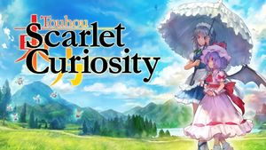

- Welcome to Touhou Wiki!
- Please register to edit. For assistance, check in with our Discord server or IRC channel.
Adventures of Scarlet Curiosity
| 東方紅輝心 Adventures of scarlet curiosity | |
|---|---|
|
 Title screen of the PlayStation 4 version
| |
| Developer |
Ankake Spa |
| Publisher |
Ankake Spa |
| Released |
Original version: |
| Genre |
Role-Playing Game |
| Gameplay |
Single-player story mode |
| Platforms |
Windows XP/Vista/7/8 |
Touhou Koukishin ~ Adventures of Scarlet Curiosity (東方紅輝心 ~ Adventures of Scarlet Curiosity) is a 3D RPG released on 16 August during Comiket 86. An updated and remastered version of the game for PlayStation 4, as part of Play, Doujin!, was announced on December 28, 2015. The game was confirmed for localization on June 2, 2016, under XSeed Games, for the digital North American release under the shortened title of "Touhou: Scarlet Curiosity". In May 22, 2018, a Steam version was announced in XSEED's 2018 3rd Party Lineup Announcement Teaser Trailer.
Adventures of Scarlet Curiosity is the first Touhou Project game to be shown in E3.
Gameplay[edit]
The game is an expansion of Youyou Kengeki Musou, adding various RPG elements. It also introduces routes, as you have the choice to play as Remilia Scarlet or Sakuya Izayoi. The gameplay also takes inspiration to the Ys series.
The main combat distinction between Remilia and Sakuya is that Remilia is very skilled at melee combat while Sakuya is preferred at long range attacks.
The game takes place in night or day, depending on the story and the girl chosen to be the player character.
Synopsis[edit]
Remilia tries to remedy her boredom when she stumbles across a newspaper article about a powerful, mysterious monster terrorizing the countryside. In excitement, she ventures out hoping to cure her own boredom.
After a hard search, Remilia was unable to find the monster. Remilia returns home only to find out that her own manor is in ruins. This event both enraged and excited the vampire as she was able to find something interesting to do, as she thought that the monster had come for her, and also take revenge for the destruction of the Scarlet Devil Mansion.
Music[edit]
The soundtrack was arranged by Hachimitsu Lemon with some copyrighted music from Earth.boy and William John Grega.
A 2-disc soundtrack was released on August 16, 2014 at Comiket 86 titled "東方紅輝心 ～Original Soundtrack～". The first disc had 14 tracks while the second disc features 17 tracks.
The soundtrack consists of arrangements from Highly Responsive to Prayers, Mystic Square, Embodiment of Scarlet Devil, Immaterial and Missing Power, Imperishable Night, Mountain of Faith, Subterranean Animism, Touhou Hisoutensoku, Fairy Wars, Double Dealing Character, Changeability of Strange Dream, Touhou Unreal Mahjong, Strange and Bright Nature Deity and Neo-traditionalism of Japan.
Release[edit]
The original game was released on Comiket 86. The game later became available for digital purchase on the Japanese Playism site for ¥1980.
The PlayStation 4 was only released digitally with no physical copies to be made. The game became available in the PlayStation Store for ¥2500 (Japan) or $19.99 (USA).
Additional Information[edit]
- This is the first Touhou game that appeared on E3.
- Scarlet Curiosity was one of the games that were awarded with the Indie Special Award by Sony Computer Entertainment in the PlayStation Awards.
- The Steam version is the first Touhou game to support up to 4K resolution.
- During in an livestream by XSeed Games, they erroneously stated that the game features co-op.
- Scarlet Curiosity is the first Touhou fangame that was ported and updated to consoles that was ported back for PC.
- When meeting with Remilia on the Extra Route, Flandre will say "You thought it was Patchouli, but it was me, Flandre!", which is a reference to one of the popular lines in the JoJo's Bizarre Adventure series.
- The track that plays at Kourindou is Sandpiper by Earth.boy, which is a copyrighted music track.
- This led to players who make playthroughs of the game unable to monetize their video on YouTube unless the music is turned off when visiting Kourindou.